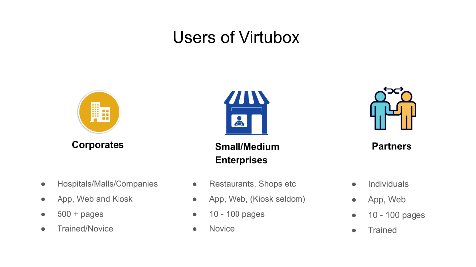
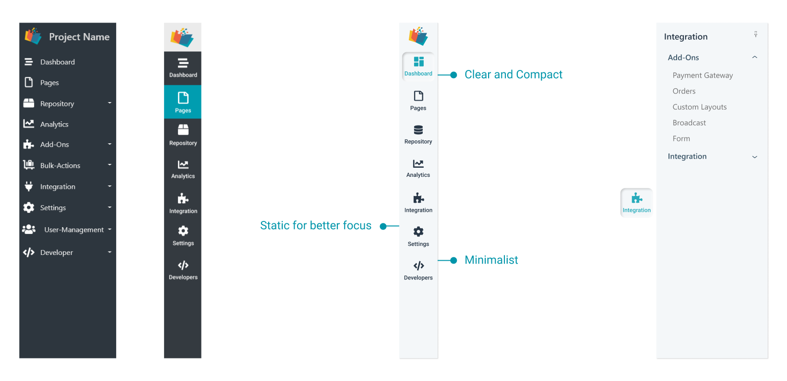
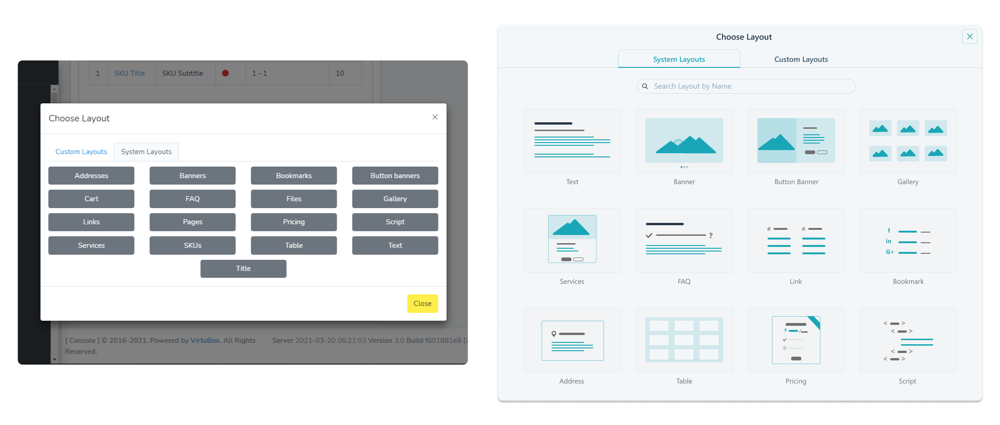
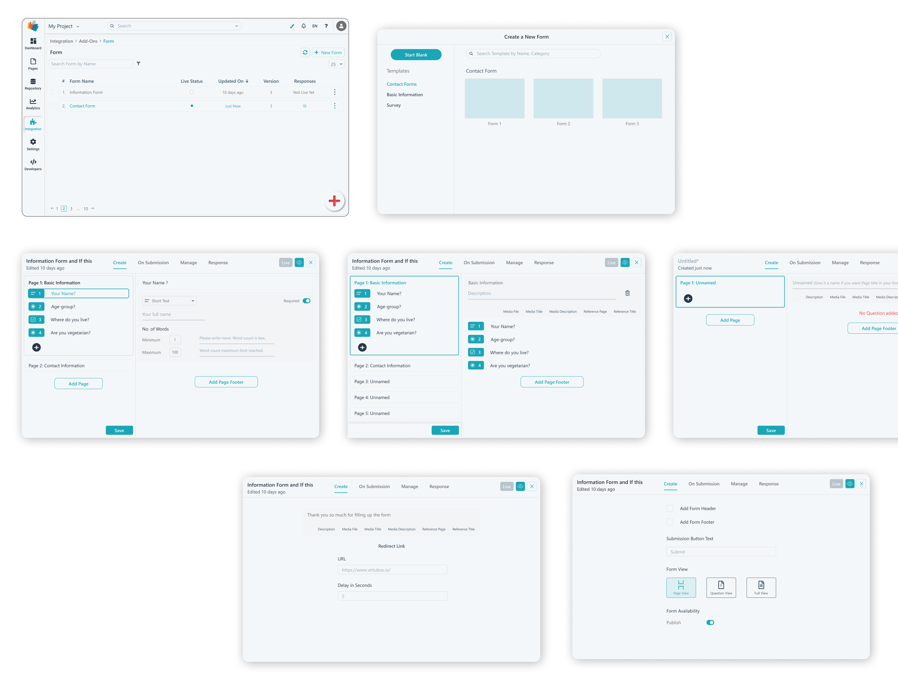
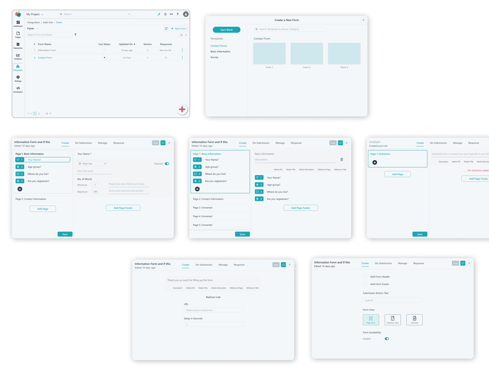

Virtubox Infotech is a No-Code Platform. It offers cloud-based solutions for App, Website and Kiosk.
My role was to build an interactive prototype of Virtubox platform that fulfills the business and user-requirements. In Simple terms, my work involved -

UX Goal : Easy Navigation and Intuitive Flow of Sidebar so that content and
features across the platform can be easily accessible.
Worksheet - Information Architecture

Initial Designs to Final Design of Sidebar
Structure of the page in App/ Website/ Kiosk Solution can be understood by the following diagram. Virtualbox system provides various types of layouts which can be used to design desired digital medium.


UX Goal : Supporting Users to select appropriate layout with the help of visual cues
Previous Design vs Proposed Design
UX Goal : CSS Styling can be applied at three levels - Project, Page and Layout specific.How to provide these three level of styling while reducing the system complexity to avoid confusion?
Add-Ons are ones which are created by Virtubox itself to help users according to their need. Forms, Order-System, Payments, etc are add-ons. Integration is Third Party APIs such as Navigation Maps, Advanced Forms, Calendly, etc. Below Example - Forms
UX Goal : Form Creation and Customization
 

Research Preparation
Following are the methods that were used to design research questions and plan for Usability Testing.

Heuristic Evaluation
A detailed Heuristic Evaluation report is accessible here -

Design Process goes to infinity. It never completes. Therefore I can never say that the final design is perfect and it solves every problem. This was the greatest learning experience that I was able to learn as a UI/UX Designer.